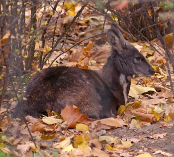

Мазаалай (Ursus arctos gobiensis) Монголын говь цөлөөр тархсан хүрэн
баавгайн дэд зүйл. Монголын улаан номд орсон. Ерөнхий төрх ойн хүрэн
баавгайтай адил боловч биеэр бага. Цагаан богд уулын шармаахайн биеийн
урт 169 см, сэрвээний өндөр 92 см, жин 90 кг байжээ.Мазаалайн биеийн
дундаж жин 90-100 килограмм, биеийн урт нь 150 сантиметр орчим, өндөр
нь 80-92 сантиметр.

Ирвэс (Uncia uncia буюу Panthera uncia) Төв Азийн уул нуруудаар
тархсан дунд зэргийн биетэй мийнхэн овгийн зүйл. Энэ зүйлийн ангилал
өөрчлөгдсөөр ирсэн бөгөөд таксономийн нэршил нь одоо ч тодорхойгүй.
Судалгаанаас үзэхэд хоолойнд байдаг архирахад шаардлагатай морфологийн
нэгэн шинж байдаггүй учир архирч чаддаггүй.

Хүдэр (Moschus moschiferus) нь Зүүн Хойд Азийн уулархаг нутгийн ой
модоор тархмал. Сибирийн өмнөд хэсгийн тайгаар хамгийн түгээмэл бөгөөд
Монгол Улс, Өвөр Монгол, Манжуур, Солонгосын хойгт мөн бий. Шөнийн
голдуу амьдралтай, ойрхон нүүдэллэдэг. 2600 м-ээс дээш өндөрт
амьдарна. Бие гүйцсэн хүдэр жижиг биетэй, 7-17 кг жин татна.
Гадаад төрх гэрийн ямаатай төстэй, биеэр том, хүзүү богино, бүдүүн,
чих 15 см хүртэл урт, шовх, хөл бүдүүн бахим, сүүл 10-15 см. Тэхийн
биеийн урт 128-167 см, сэрвээгээрээ 105 см өндөр, амьдын жин 80-110 кг
хүрнэ. Ямаа биеэр бага, 120-136 см урт, сэрвээгээрээ 75-90 см өндөр,
жин 90 кг хүрнэ. Тэх гэдрэгээ махийсан сэлэм хэлбэртэй, олон төвөнх үе
бүхий 120-140 см урт эвэртэй. Ямааны эвэр богино, нарийн.
Аргаль нь Төв Азийн (Гималайн нуруу, Төвөд, Алтайн нуруу) уулархаг,
өндөр бүс нутгаар амьдардаг хамгийн том зэрлэг хонь юм. Өндөр нь 120
см, 140 кг хүртэл жинтэй байх ба биеийн урт 1.8 м хүрнэ. Эр нь маш том
угалзалсан эвэртэй бөгөөд 190 см хүртэл урт байдаг аж. Эм нь бас
эвэртэй ч жижигхэн байна.

Цагаан зээр (лат. Procapra gutturosa англ. Mongolian gazelle) — Монгол
орны өмнө, дорнын уудам тал, ухаа толгодоор идээшиж бэлчдэг. Зээрийн
гол сүрэг Монголд байрладаг ба сибирийн өмнөд хэсгээр ба Хятадын зүүн
хэсгээр бага зэрэг тархсан. Цагаан зээрийн анхны тооллогоор Монголд
1970-аад онд 5 сая цагаан зээр тоологдсон харин 2010 оны тооллогоор 3
сая зээр тоологджээ. Хамаагүй хууль бус агналтаас болж зээрийн сүрэг
багассан байна. Зээр нь голцуу 20-30-аараа сүрэглэнэ зарим үед 5000
хүртэл толгойтойгоор сүрэглэнэ.